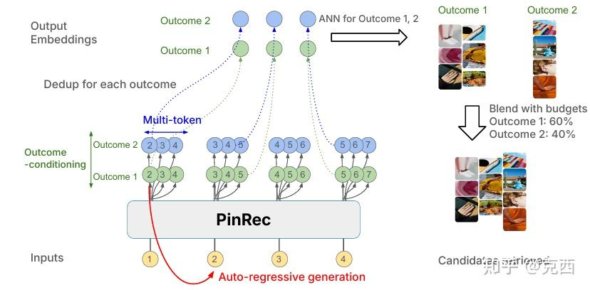
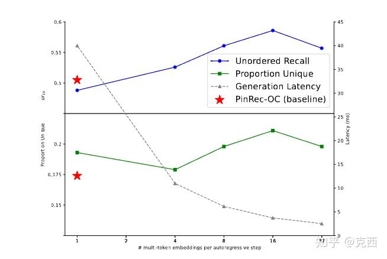

0. 写在前面
OneRec 的核心问题是：
生成式模型能不能统一召回和排序，直接生成推荐 session？而PinRec 的问题更工程化：
生成式召回能不能在 Pinterest 这种超大规模平台里稳定服务，
同时支持多业务目标、候选多样性和低延迟？值得注意的是：PinRec 没有走 semantic ID 自回归生成路线。它不是让模型生成 \(<a_9><b_1><c_5>\) 这样的离散 item code，而是让 transformer 根据用户历史生成多个 dense item embedding，然后用 ANN/Faiss 去召回真实 Pins。
所以 PinRec 更像是：
用户行为序列 -> transformer 生成多个未来兴趣向量 -> ANN 检索 Pins -> 下游排序/融合PinRec 在 Pinterest Homefeed、Search、Related Pins 三个主要场景上线，带来显著线上收益，Homefeed 中 PinRec-{MT, OC} 带来 +1.73% site-wide grid clicks、+3.33% Homefeed grid clicks、+0.55% time spent；Search 中 PinRec-UC 带来 +2.27% search fulfillment rate 和 +4.21% search repins。
这篇文章的三个是：
- Outcome-conditioned generation：按业务目标条件生成，例如偏点击、偏保存、偏出站点击。
- Temporal multi-token prediction：一次生成多个未来时间偏移上的 embedding，提高效率和多样性。
- Industrial serving：Triton、KV cache、CUDA Graphs、Faiss、ID embedding CPU 服务、INT8 传输、FP16 推理。
1. 背景：生成式召回为什么难上线
传统工业推荐通常是两阶段或多阶段：
召回：从海量物料中取几千个候选
排序：对候选做精细打分
融合/重排：多目标、多通道、多样性、规则约束召回阶段常用 two-tower：
user tower -> user embedding
item tower -> item embedding
topK inner product / ANNtwo-tower 的优点很明显：快、稳定、易缓存、易服务。但它也有局限：
- 用户历史通常被压成一个向量，表达能力有限。
- 对异构行为序列建模不够细，例如搜索、点击、保存、出站点击发生在不同 surface。
- 多业务目标通常要靠多个模型或后处理预算控制。
- 候选多样性受 embedding 空间和 ANN 近邻结构限制。
生成式召回的思路是用序列模型建模用户行为，然后生成要召回的候选。学术上已有 TIGER、HSTU 等工作证明生成式召回有潜力，但工业上线会遇到三个核心问题：
- 目标灵活性：业务今天想多拿 saves，明天想多拿 clicks，模型如何动态控制？
- 多样性：如果自回归每步只生成一个候选，很容易既慢又局部。
- 服务成本：生成模型要多步推理，比 two-tower 昂贵，如何满足线上延迟？
PinRec 的三大设计正好分别对应这三个问题。
2. PinRec 的总体框架

PinRec 是 Pinterest 推荐系统里的 candidate generator。它不会直接替代排序，而是作为召回通道生成候选 Pins，候选再进入下游 ranking 和 blending。
整体流程可以写成：
用户历史行为序列
-> 特征化为 item/action/surface/time embedding
-> causal transformer 建模历史
-> outcome-conditioned output head 生成未来 item embedding
-> temporal multi-token 一次生成多个未来 embedding
-> embedding compression 去重合并相似生成向量
-> Faiss ANN 检索真实 Pins
-> 下游 ranking/blending和 OneRec 不同，PinRec 不直接输出最终展示列表，也不尝试统一 retrieve/rank。它更务实地选择把生成式模型放在 first-stage retrieval，用它补强传统召回系统。
这个定位很重要。PinRec 的目标不是“端到端生成最终结果”，而是作为一个更强、更可控、更丰富的召回器，为排序系统提供候选。
3. 用户序列如何表示
PinRec 的用户历史不是单纯的 item 序列。论文把一次用户交互表示成四元组：
\((item_i, action_i, surface_i, time_i)\)
其中：
item_i：用户交互的对象，可以是 Pin、搜索 query 等。action_i：行为类型，例如 click、save、share、comment。surface_i：发生在哪个推荐场景，例如 Homefeed、Search、Related Pins。time_i：交互时间。
用户历史是按时间排序的：
\(H(u, t_max) = [(i_1, a_1, s_1, t_1), (i_2, a_2, s_2, t_2), ... (i_m, a_m, s_m, t_m)]\)
并且：
\(t_1 <= t_2 <= ... <= t_m\)
Transformer 使用 causal attention，也就是位置 t 只能看过去，不能看未来。这一点和语言模型类似，但推荐序列和语言有一个关键差异：语言有很强的局部语法结构，用户行为序列则更松散，强依赖不一定发生在相邻位置。
4. 为什么 PinRec 不用 Semantic ID
这是 PinRec 和 OneRec/TIGER 最大的区别之一。
很多生成式推荐工作会把 item 编成 semantic ID：
\(item -> \ <a_9><b_1><c_5>\)
然后模型自回归生成这些离散 token。
但 PinRec 最终选择 dense embedding generation，也就是直接生成连续向量，再通过 ANN 检索 item。
论文给出的理由很直接：他们探索过 semantic ID，但发现 semantic ID 经常出现 representational collapse，也就是大量 item 被分到相同或过于相似的 ID，离线指标也更差。
PinRec 的路线是：
生成连续 embedding，而不是生成离散 semantic token。这带来几个好处：
- 可以复用 Pinterest 已有的强 item embedding 体系。
- 不需要维护一个稳定、均衡、可扩展的 semantic ID codebook。
- ANN 检索天然适配 dense embedding。
- 更容易和现有 two-tower/embedding retrieval 基础设施融合。
但它也有代价：
- 生成过程不再是离散 token 分类，而是向量回归/对比学习。
- 最终 item 选择依赖 ANN 近邻，而不是模型显式生成 item ID。
- 召回质量高度依赖 item embedding 空间质量。
所以 PinRec 不是“比 semantic ID 更高级”，而是选择了更适合 Pinterest 现有工业系统的表示方式。
5. Item embedding：内容语义 + ID 记忆
PinRec 对 Pin 的表示由两部分组成：
Pin embedding = semantic embedding + learned ID embedding5.1 Semantic embedding
Pinterest 使用预训练的 OmniSage embedding。它融合视觉、文本和 Pin-board 图上的 engagement 信息，负责表达 Pin 的内容和图结构语义。
这部分解决的是泛化：
新 Pin 或相似 Pin 可以依靠内容/图语义被召回。5.2 Learned ID embedding
论文还加入了大规模 Pin ID embedding。每个 Pin ID 经过多个 hash function，映射到若干 embedding table，再拼接成最终 ID embedding。
它解决的是记忆：
某些高价值 Pin 的细粒度偏好，仅靠内容语义可能表达不出来。这个设计很像推荐系统里的老问题：内容 embedding 负责泛化，ID embedding 负责记忆。PinRec 同时使用两者。
附录里有一个很关键的消融：加入 ID embedding，相比没有 ID embedding，unordered recall@10 在 Homefeed 提升 +14.0%，全场景提升 +14.4%。这说明 PinRec 的效果很大一部分来自“强物料表示”，不是只来自 transformer。
这也提醒我们：生成式召回的核心不只是 decoder 多强，item embedding 空间本身同样是地基。
6. Outcome-Conditioned Generation：把业务目标作为生成条件
PinRec 的第一个核心创新是 outcome-conditioned generation。
传统召回模型通常输出一个用户兴趣 embedding：
h_u -> predicted item embedding但 Pinterest 的业务目标不是单一的。不同场景、不同时间可能想优化不同结果：
repin / save
grid click
long grid click
outbound click
...PinRec 的做法是把 outcome 作为条件输入 output head：
i_hat_{u,t} = O(h_{u,t}, c_1, c_2, ..., c_n)其中：
h_{u,t}是 transformer 在当前位置的隐藏状态。c_1, c_2, ...是条件 embedding，例如 action condition、surface condition。i_hat_{u,t}是生成的目标 item embedding。
直观上，同一个用户历史可以生成不同目标下的兴趣向量：
用户历史 H + condition=click -> 更容易召回会点击的 Pins
用户历史 H + condition=save -> 更容易召回会保存的 Pins
用户历史 H + condition=outbound click -> 更容易召回出站点击 Pins这比训练多个独立模型更灵活。线上可以按预算混合不同 outcome：
click: 60%
save: 40%然后分别生成候选，再按预算合并。
7. Outcome conditioning 的本质：生成多个可控兴趣视角
从建模角度看，outcome conditioning 不是简单加一个标签。它改变的是用户兴趣向量的语义。
同一个用户可能既喜欢浏览美图，也会保存教程，还会点击购物链接。不同 action 反映不同强度和意图：
click：弱兴趣，偏探索和浏览
save/repin：强兴趣，偏长期收藏
outbound click：商业意图或跳转意图如果模型只学习一个混合目标，它可能会生成一个折中 embedding，既不是最适合点击，也不是最适合保存。
Outcome-conditioned output head 相当于问：
在同一段用户历史下，如果目标是 repin，未来兴趣应该在哪里？
如果目标是 grid click，未来兴趣应该在哪里？
如果目标是 outbound click，未来兴趣应该在哪里？这让召回系统具备了可调控制旋钮。论文的线上 Homefeed Pareto front 也说明，调整 repin/grid click budget 会按预期改变 PinRec 候选自身的 repin rate 和 grid click rate。
8. Temporal Multi-Token Prediction：为什么不是一步生成一个
PinRec 的第二个核心创新是 temporal multi-token prediction。
普通自回归生成每一步只生成一个未来 item embedding：
step 1 -> embedding_1
step 2 -> embedding_2
step 3 -> embedding_3
...这在召回场景有两个问题：
- 慢：要生成很多候选 embedding，就要跑很多 decode step。
- 窄：每一步只沿着一个短期未来方向走，容易被最近兴趣支配。
PinRec 借鉴 multi-token prediction，但做了推荐场景改造：不是预测“未来第 k 个位置”，而是预测“未来某个时间偏移”的 item embedding。
公式是：
i_hat_{u,t+delta} = O(h_{u,t}, c_1, c_2, ..., c_n, e_delta)其中 e_delta 是时间偏移 embedding，例如：
现在
30 秒后
1 分钟后
更长时间后为什么用时间偏移而不是位置偏移？因为推荐行为序列不像文本。文本里的“下一个 token”和“下下个 token”位置意义稳定；但用户行为里，下一次行为可能发生在 2 秒后，也可能发生在几天后。对推荐来说，时间间隔比位置编号更有意义。
所以 PinRec 一次生成多个未来时间尺度上的兴趣向量：
短期兴趣 embedding
中期兴趣 embedding
更远未来兴趣 embedding
...这能同时提高效率和多样性。
9. Multi-token 为什么能提升多样性
如果模型只预测 immediate next item，它天然偏最近兴趣。比如用户最近看了很多食物 Pin，模型就容易只召回食物。
Temporal multi-token 会让模型预测更远时间偏移上的 item，因此可能捕捉中期兴趣或次近兴趣。论文附录的可视化也说明，PinRec-{MT, OC} 相比 PinRec-OC 更能覆盖不那么近期的兴趣，例如用户历史里同时有 nails 和 tattoos，普通 OC 更偏最近的 nails，多 token 版本能召回 tattoos 相关内容。
这可以理解为：
next-token：更像短期意图召回
multi-token：同时召回短期 + 中期兴趣
离线实验也支持这一点。图6中，多 token 每步生成数量增加时，unordered recall、proportion unique 和 latency 都出现更好的 trade-off。在每步 16 个 multi-token embedding 时，相比 PinRec-OC 有约 +16.0% recall、+21.3% diversity，并有约 10x latency reduction。
这个结果很有意思：multi-token 不只加速，还让召回更丰富。
10. 训练目标：拉近目标 embedding
PinRec 的训练不是 cross entropy over item ID，而是 sampled softmax 风格的 embedding retrieval loss。
模型在位置 t 生成一个 embedding：
i_hat_{u,t}目标是让它和真实未来 item embedding 更相似，同时和负样本更不相似。
相似度大致是：
s(i_hat, i) = gamma * dot(i_hat, i) - bias(i)其中 bias 用 count-min sketch 估计，用来修正非均匀负采样带来的 item 热度偏差。
Sampled softmax loss 直观上是：
让生成 embedding 靠近正样本 item，
远离 in-batch negatives 和 random negatives。这和 two-tower retrieval 的训练目标很接近，但 PinRec 的 query embedding 不是简单 user tower 输出，而是 transformer 自回归生成出来的未来兴趣向量。
11. Intra-feed relaxation：推荐序列不是语言
论文里还有一个容易被忽略但很重要的训练细节：intra-feed relaxation。
标准 next-token prediction 会要求：
当前位置 t -> 必须预测 t+1 的 item但 Pinterest 的 feed 交互不像语言。用户在一个 feed session 里可能以任意顺序点击、保存、浏览多个 Pin。严格要求预测“紧挨着的下一个行为”未必合理。
所以 PinRec 对同一个 feed session 内的未来 item 做放松：
当前位置 t -> 只要能预测同一 feed session 内任意未来正样本，就算合理损失上就是在未来 session target set 里取最小 loss：
min_{future item in same feed session} L_s(i_hat, item)它承认用户行为序列不是自然语言，没有那么强的局部顺序语法；更重要的是召回有没有覆盖未来会交互的 item，而不是一定命中紧邻的下一条。
12. 推理流程：生成 embedding，再 ANN 检索
PinRec 在线推理时不是直接输出 item，而是输出多个 candidate embedding。
流程如下：
1. 读取用户历史序列和实时上下文
2. transformer prefill 编码历史
3. decode 生成多个未来兴趣 embedding
4. 根据 outcome budget 分配每个 embedding 的召回预算
5. 对相似 generated embeddings 做 compression
6. 用 Faiss IVF-HNSW 进行 ANN 检索
7. 返回 Pin IDs 给下游排序系统12.1 Budget allocation
如果是 unconditioned 模型，召回预算平均分配给所有 generated embeddings。
如果是 outcome-conditioned 模型，预算按业务设定分配：
repin: 40%
grid click: 40%
outbound click: 10%
long grid click: 5%
other: 5%这样 PinRec 可以在同一个模型里服务不同业务目标。
12.2 Embedding compression
自回归生成多个 embedding 后，很多 embedding 可能很相似。如果每个都去 ANN 检索，结果会高度重叠，浪费召回预算。
PinRec 的做法是：按生成顺序扫描，如果某个 embedding 和已有未压缩 embedding 的 cosine similarity 超过阈值，就把它合并进去，并累加召回预算。这一步本质上是在做生成向量去重。
这能让 ANN 检索覆盖更多兴趣区域，而不是在同一个局部空间里重复取近邻。
13. Serving 系统
PinRec 的 serving 由多个组件组成：
Signal Service
-> ID embedding service
-> PinRec on NVIDIA Triton
-> Faiss retrieval
-> downstream recommender stack13.1 Signal fetching
用户历史信号来自 batch + real-time 两部分。
Batch 信号每天用 Spark 更新，包含过去一年的正向 engagement 和 search queries。Real-time 信号用 RocksDB KV 存储，补充 batch cutoff 之后的新行为。
说明 PinRec 不是只看离线历史，而是融合了实时兴趣。
13.2 ID embedding 独立 CPU 服务
Pin ID embedding 参数量很大。论文说 ID embedding 约 10B 参数，但这些是稀疏访问的。为了不占用 GPU，PinRec 把 ID embedder 放在独立 CPU memory-optimized service，用 TorchScript 做到 single-digit ms latency。
大规模推荐模型里，稀疏 ID embedding 和 dense transformer 的服务资源需求完全不同，强行放一起会浪费 GPU 内存。
13.3 Transformer 推理优化
主模型在 NVIDIA L40S GPU 上用 Triton serving。优化包括：
- CUDA Graphs：减少 kernel launch overhead。
- torch.compile：编译主要组件。
- KV Cache：prefill 历史后缓存 K/V，decode 时只处理新增 token。
- INT8 传输 + FP16 推理：序列元素 embedding 传输时 INT8，推理时 dequantize 到 FP16。
服务效率数据也很具体：PinRec-OC/OC, MT 在 80 QPS 下，6 步生成的延迟为 p50 40ms / p90 65ms；PinRec-UC 3 步生成为 p50 23ms / p90 46ms。虽然比传统 two-tower p50 高约 3-4 倍，但由于可与其他 RPC 并行，端到端延迟增加小于 1%。
14. 离线实验：PinRec 到底强在哪里
论文使用 unordered recall@10 作为主要离线指标。因为 PinRec 会生成多个 embedding，评估时不是单个预测对单个 target，而是比较生成 embedding 集合能否召回未来 target item 集合。
主表结果如下：
| Model | Homefeed | Related Pins | Search |
|---|---|---|---|
| SASRec | 0.382 | 0.426 | 0.142 |
| PinnerFormer | 0.461 | 0.412 | 0.257 |
| TIGER | 0.208 | 0.230 | 0.090 |
| HSTU-OC | 0.596 | 0.539 | 0.179 |
| PinRec-UC | 0.608 | 0.521 | 0.350 |
| PinRec-OC | 0.625 | 0.537 | 0.352 |
| PinRec-{MT, OC} | 0.676 | 0.631 | 0.450 |
几个结论很明显。
第一，PinRec 明显强于 SASRec、PinnerFormer、TIGER。尤其 TIGER 在 Pinterest 的 dense/heterogeneous 工业场景下表现很差，这也侧面支持了 PinRec 不采用 semantic ID 的选择。
第二，Outcome conditioning 有稳定提升。PinRec-OC 相比 PinRec-UC 在 Homefeed 和 Related Pins 都更好。
第三，Multi-token 是最大增益来源。PinRec-{MT, OC} 相比 PinRec-UC，在 Homefeed、Related Pins、Search 分别有明显提升，论文概括为 over +10%、over +20%、+30% on search。
第四，HSTU 在 Related Pins 接近 PinRec-OC，但 Search 上明显掉队。这说明 PinRec 的 outcome conditioning 和 multi-token 思路不强依赖 transformer 架构，但架构选择在不同 surface 上仍然重要。
15. Outcome conditioning 实验：控制真的有效吗
论文专门验证了 outcome conditioning 是否真的能控制生成方向。
做法是：把预算全部给某个 desired action，例如 repin，然后看模型对真实 repin target 的 recall 是否提升，对其他 action 是否下降。
结果显示，当 desired action 和 actual action 匹配时，recall 会提升：
repin: +1.9%
grid click: +1.4%
long grid click: +4.8%
outbound click: +6.2%当 desired action 不匹配时，很多 recall 会下降，尤其 outbound click 和其他 action 的差异非常大。
从业务角度看，它让推荐系统可以动态控制召回池，而不是只能在排序阶段调权重。
16. 线上 A/B：作为候选生成器的实际收益
PinRec 在 Homefeed、Search、Related Pins 都做了线上实验。
16.1 Homefeed
Homefeed 表 2：
| Metric | PinRec-UC | PinRec-OC | PinRec-{MT, OC} |
|---|---|---|---|
| Fulfilled Sessions | +0.02% | +0.21% | +0.28% |
| Time Spent | -0.02% | +0.16% | +0.55% |
| Unfulfilled Sessions | -0.28% | -0.89% | -0.78% |
| Site-wide Grid Clicks | +0.58% | +1.76% | +1.73% |
| Homefeed Grid Clicks | +1.87% | +4.01% | +3.33% |
- PinRec-UC 已经能提高点击。
- OC 明显增强可控目标。
- MT+OC 对 fulfilled sessions 和 time spent 更好，说明多样性和更长时间尺度兴趣有帮助。
16.2 Search
Search 上 PinRec-UC：
Search Fulfillment Rate: +2.27%
Search Repins: +4.21%
Search Grid Clicks: +3.00%论文还提到在 promoted product retrieval 中，相同 embedding 带来 1.83% CPA reduction 和 1.87% shopping conversion volume increase in the US。这说明 PinRec 生成的 embedding 对商业检索也有价值。
17. Tail 用户和长尾 item：生成式召回的额外价值
附录里有一组很重要的分析。
对新用户和 resurrected users，PinRec-UC/OC 都能提升 grid clicks 和 outbound clickthroughers。例如新用户：
Grid Clicks: UC +2.60%, OC +2.62%
Outbound CTs: UC +3.98%, OC +5.78%对长尾 item，相比生产 two-tower：
Corpus Coverage unique pins: UC +6.2%, OC +17.3%
1-impression tail item recommendation: UC +5.8%, OC +7.7%这说明 PinRec 不只是拿热门 item 换指标。它确实扩大了 corpus coverage，让更多长尾 Pins 被召回。
很多生成式推荐方法容易被质疑会不会更热门偏置，PinRec 的结果表明，至少在 Pinterest 的 dense embedding + multi-token + compression 设置下，它能提升覆盖和长尾曝光。
18. 和 OneRec 的对比
PinRec 和 OneRec 都是工业生成式推荐，但路线差别非常大。
| 维度 | OneRec | PinRec |
|---|---|---|
| 公司 | 快手 | |
| 目标 | 统一 retrieve + rank | 工业级 generative retrieval |
| 输出 | semantic ID token / session | dense item embeddings |
| item 表示 | Balanced semantic ID | OmniSage + hashed ID embedding |
| 生成对象 | 推荐 session | 多个未来兴趣 embedding |
| 是否直接替代排序 | 更接近直接生成主链路 | 不替代排序，作为候选生成器 |
| 多目标控制 | IPA/RM 对齐 | outcome-conditioned generation + budget |
| 效率核心 | MoE、KV cache、beam search | multi-token、embedding compression、Triton、Faiss |
OneRec 更像是在探索推荐系统终局：
能不能用一个生成模型端到端生成最终推荐列表？PinRec 更像是在回答当下工程问题：
如何把生成式模型安全、可控、低成本地接进现有工业召回链路？19. PinRec 的真正贡献
PinRec 的贡献在于把生成式召回拆成了一套可服务的工业设计：
- 用 dense embedding generation 避免 semantic ID 崩塌和词表维护问题。
- 用 outcome conditioning 给召回阶段增加多目标控制能力。
- 用 temporal multi-token 同时改善效率、多样性和中期兴趣覆盖。
- 用 embedding compression 避免多个 generated embeddings 检索结果重叠。
- 用 CPU ID embedding service + GPU transformer + CPU Faiss 的异构 serving 架构控制成本。
20. 局限
20.1 它依赖强 embedding 基础设施
PinRec 的成功很大程度依赖 OmniSage、OmniSearchSage、ID embedding、Faiss index 等成熟基础设施。没有高质量 item embedding，生成 dense embedding 再 ANN 检索的效果会大打折扣。
20.2 它没有解决端到端排序
PinRec 是 candidate generator，最终展示仍由下游 ranking/blending 决定。这使它更容易上线，但也意味着召回和排序之间仍然存在目标不一致。
20.3 Outcome conditioning 不是完整多目标优化
Outcome conditioning 能控制召回预算，但它不是严格的多目标最优解。比如 click 和 repin 的 trade-off 仍需要人为设 budget。模型提供控制旋钮，但业务如何设旋钮仍是系统问题。
20.4 离线 recall 不能完全代表线上收益
论文离线用 unordered recall@10，这适合召回评估，但线上用户体验还取决于 ranking、blending、去重、多样性、广告、上下文等因素。因此 PinRec 的线上 A/B 比离线表更重要。
20.5 生成 embedding 的可解释性有限
Semantic ID 至少可以分析 token 分支；dense embedding 生成更难解释。模型为什么生成某个兴趣向量、它对应什么语义区域、为什么 ANN 召回这些 Pins，都需要额外工具分析。
21. 总结
PinRec 是一篇非常务实的工业生成式推荐论文。它没有追求“一个模型完成所有推荐决策”，而是选择了更容易上线的路径：
用 transformer 根据异构用户行为生成多个 outcome-conditioned、temporal multi-token 的未来兴趣 embedding，再通过 ANN/Faiss 召回真实 Pins，作为工业推荐系统的候选生成器。
这篇论文最大的启示是：生成式推荐不一定非要生成 item ID，也不一定要立刻替代排序系统。对于很多工业推荐场景，更实际的切入点是：
用生成模型增强召回，
用条件控制增强多目标灵活性，
用多 token 生成解决效率和多样性，
用现有 ANN 和排序系统承接结果。